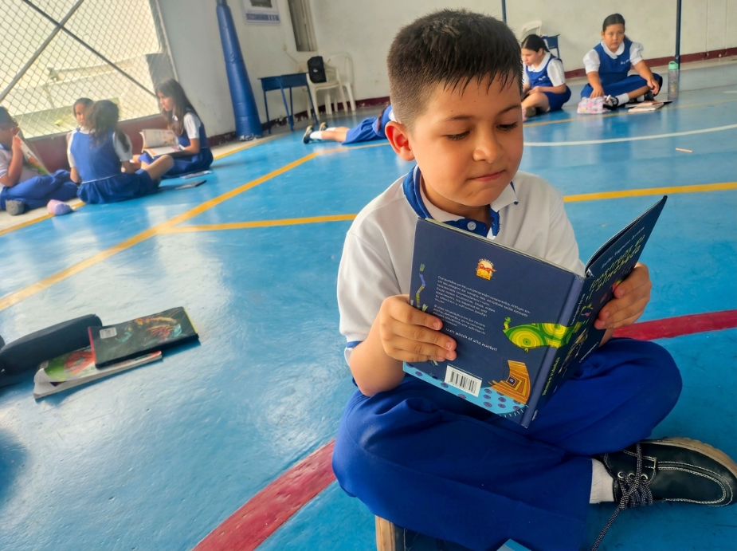
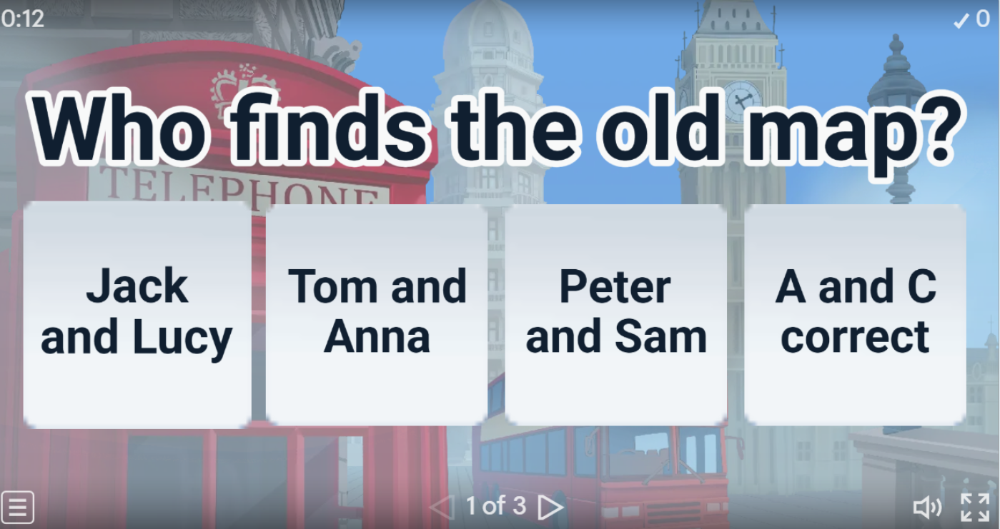
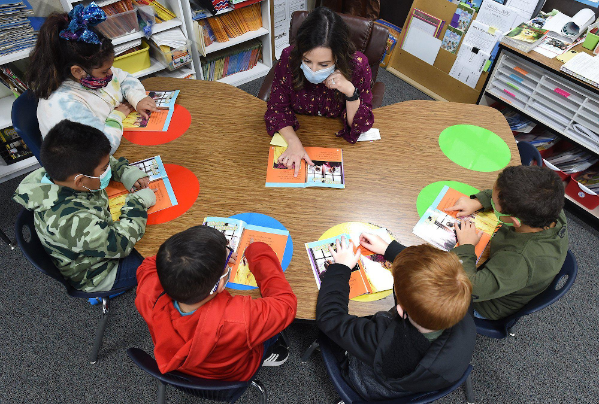
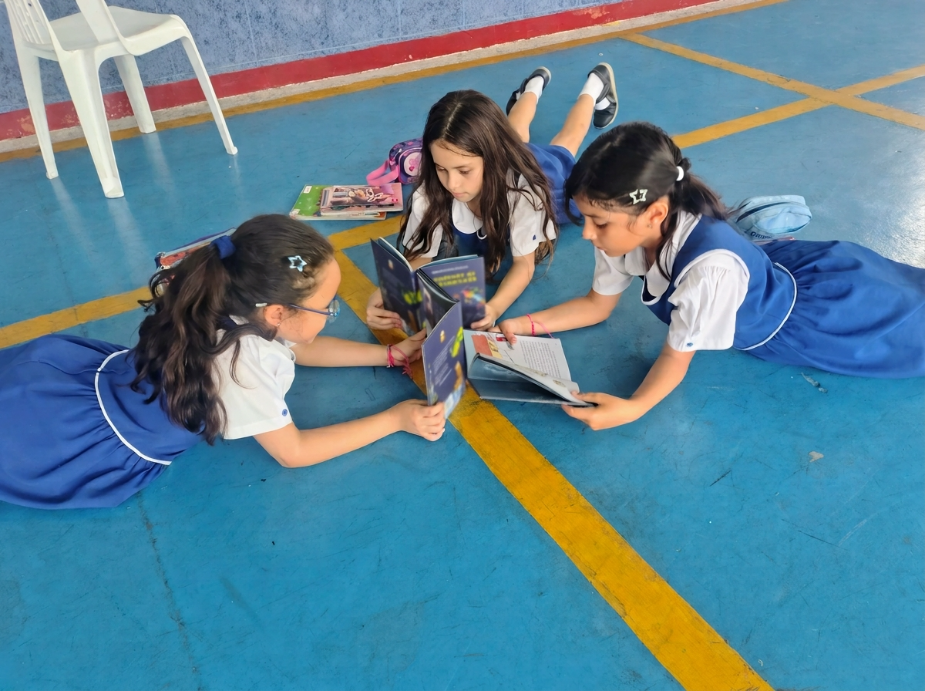
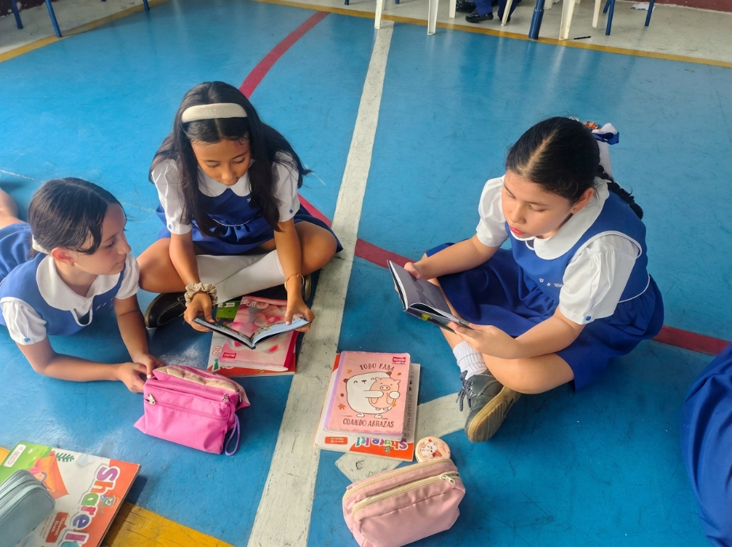
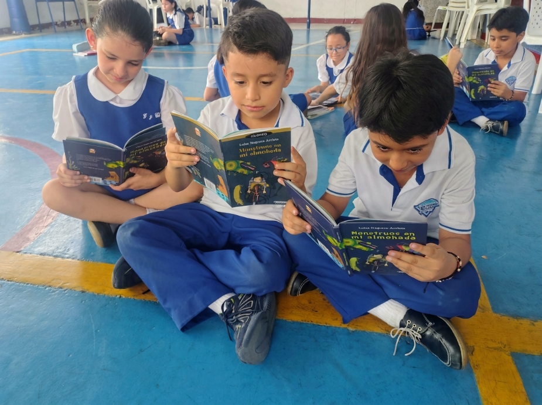
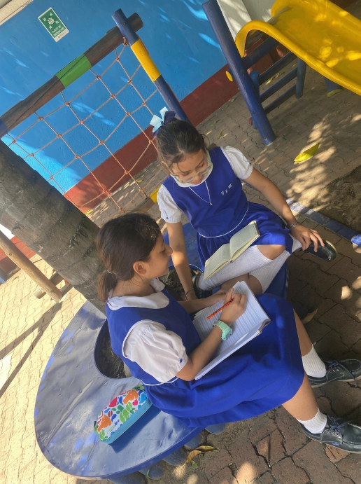
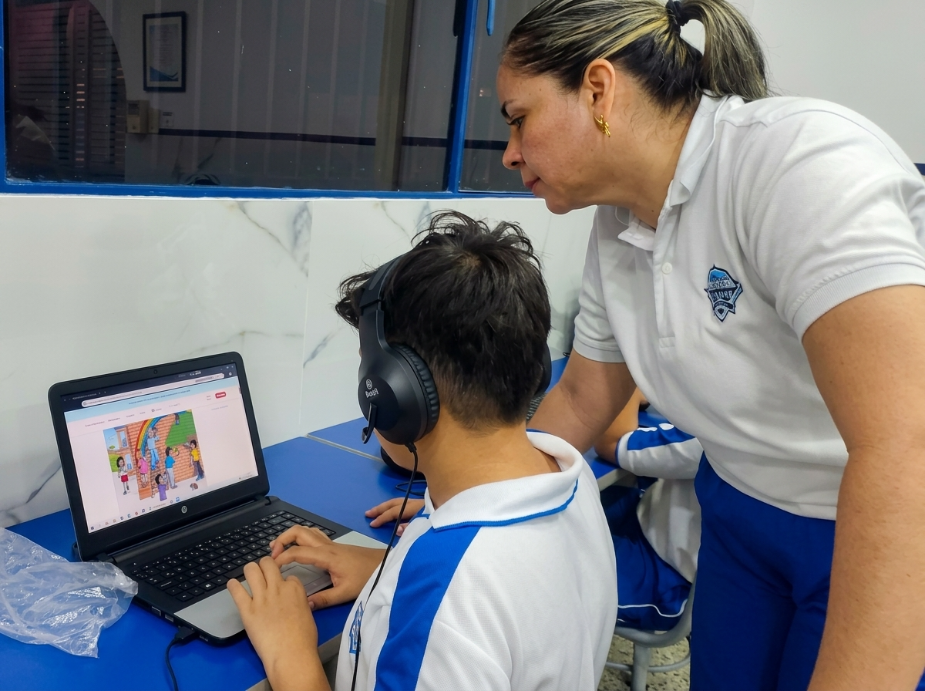
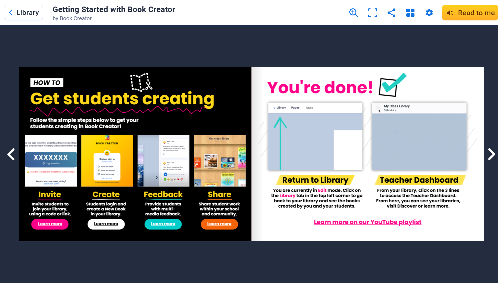

Expediente 03-PRI
Detectives de Historias
Tercer grado decodifica, pero no infiere: un laboratorio para investigar el vacío de un cuento y escribir de verdad.
Tercer grado decodifica, pero no infiere: un laboratorio para investigar el vacío de un cuento y escribir de verdad.
Empatizar → Definir → Idear → Prototipar → Evaluar
Gaceta escolar
3.° llamado a investigar lo que el texto no dice.
Universidad de Cartagena · Laboratorio de innovación educativa
Grado 3.° · Lenguaje · Caso abierto
Investigar un vacío deliberado, debatir con evidencia y escribir la versión en un mini-libro digital.

Sospechoso 01

Sospechoso 02

Sospechoso 03

El vacío obliga a inferir, a discutir con pistas del texto y a escribir una versión propia — no a jugar al margen de la lectura.





De la pista colectiva al mini-libro: planear · redactar · revisar · publicar
Resultados del pilotaje: pendientes. Fecha estimada: [fecha].
Mini-libro digital ilustrado: el producto final de la secuencia.
Abrir recursoTablero de pistas: hipótesis y evidencias del vacío narrativo.
Abrir recursoInfografía del caso: el vacío, las pistas y el mini-libro en un vistazo.
Abrir infografíaIlustración de escenas, portada del mini-libro y rúbrica de autoevaluación.
Abrir en Canva Descargar rúbrica PDFDebate en caliente: votar inferencias con evidencia.
Abrir recursoJuego de lenguaje: preposiciones, conjunciones e interjecciones.
Abrir juegoInforme de campo
Sin señal
Pitch pendiente de publicación
Tres minutos: el problema, la secuencia y el mini-libro digital.
Pista 1 de 7 · Inicio